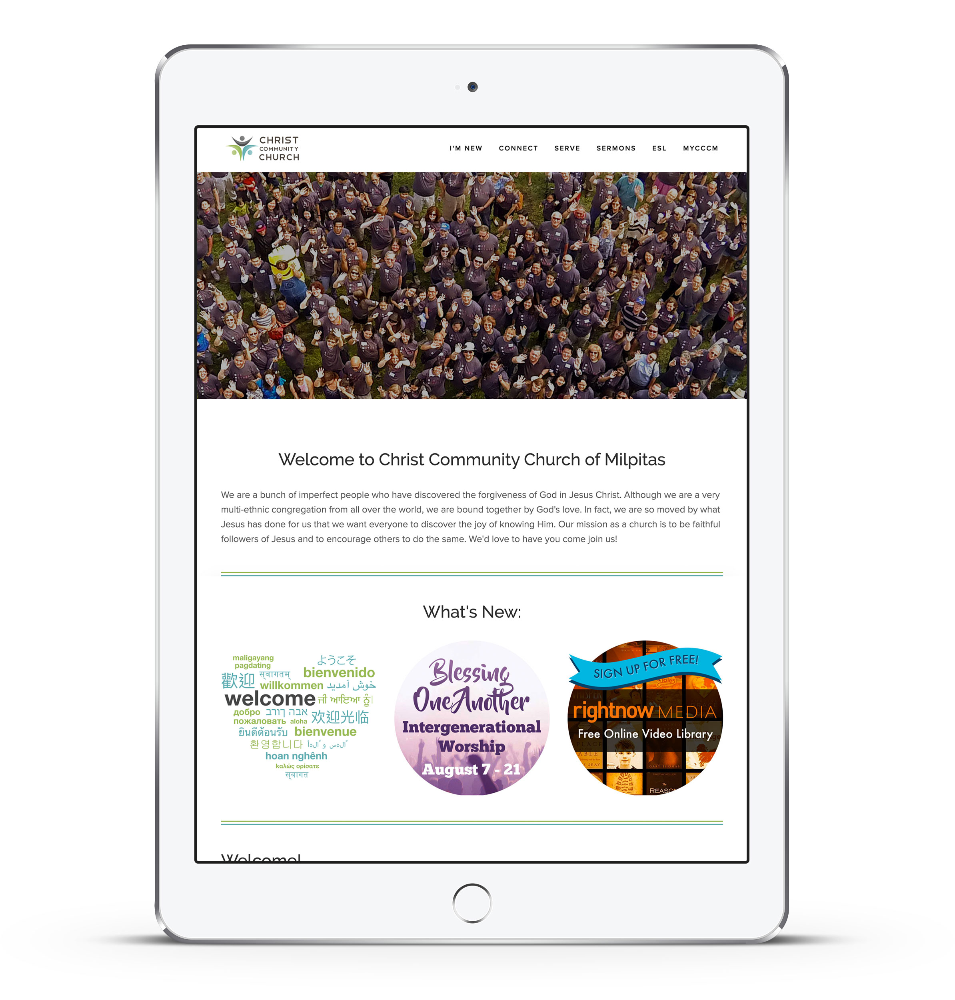

CCCM Website
UX/UI Design, Branding
With Christ Community Church of Milpitas, I updated the church's decades-old branding.
With the church located in an ethnically and culturally diverse part of the Bay Area, my biggest challenge was coming up with universal symbols and messages to better connect the community.
Most important was self-sufficiency with managing the website along with a mobile-friendly responsive layout and easy to use content management system.
Branding:
One of the biggest challenges in re-branding for a nearly 50-year-old organization is updating the aesthetic while keeping it timeless enough to last as long as possible. CCCM prides itself on its diversity in the community of Milpitas, and we landed on a symbol that matches the open embrace of the organization across many languages and cultures.

With Christ Community Church of Milpitas, I updated the organization's decades-old branding.
With the church located in an ethnically and culturally diverse part of the Bay Area, my biggest challenge was coming up with universal symbols and messages to better connect the community.
Most important was self-sufficiency with managing the website along with a mobile-friendly responsive layout and easy to use content management system.
